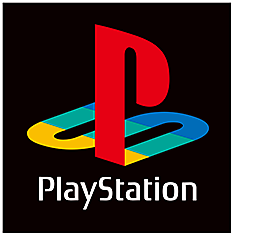

Playstation officially abbreviated as PS is a video game brand produced by Sony Interactive Entertainment, a division of Sony.
Until 1991, Sony had little direct involvement with the video game industry. The company supplied components for other consoles, such as the sound chip for the Super Famicom from Nintendo, and operated a video game studio, Sony Imagesoft. As part of a joint project between Nintendo and Sony that began as early as 1988, the two companies worked to create a CD-ROM version of the Super Famicom, though Nintendo denied the existence of the Sony deal as late as March 1991. At the Consumer Electronics Show in June 1991, Sony revealed a Super Famicom with a built-in CD-ROM drive that incorporated Green Book technology or CD-i, called "Play Station" (also known as SNES-CD). However, a day after the announcement at CES, Nintendo announced that it would be breaking its partnership with Sony, opting to go with Philips instead but using the same technology. The deal was broken by Nintendo after they were unable to come to an agreement on how revenue would be split between the two companies. The breaking of the partnership infuriated Sony President Norio Ohga, who responded by appointing Kutaragi with the responsibility of developing the PlayStation project to rival Nintendo.

The PlayStation logo was designed by Manabu Sakamoto. He wanted the logo to capture the 3D support of the console, but instead of just adding apparent depth to the letters "P" and "S", he created an optical illusion that suggested the letters in depth of space. Sakamoto also stuck with four bright principal colors, red, yellow, green, and blue, only having to tune the green color for better harmony across the logo. Sakamoto also designed the black and white logo based on the same design, reserved for times where colors could not be used.
At Sony Music Entertainment, Kutaragi worked closely with Shigeo Maruyama, the CEO of Sony Music, and with Akira Sato to form Sony Computer Entertainment Inc. (SCEI) on November 16, 1993.[26] A building block of SCEI was its initial partnership with Sony Music which helped SCEI attract creative talent to the company as well as assist SCEI in manufacturing, marketing and producing discs, something that Sony Music had been doing with Music Discs. The final two key members of SCEI were Terry Tokunaka, the President of SCEI from Sony's headquarters, and Olaf Olafsson. Olafsson was CEO and president of New York-based Sony Interactive Entertainment[27] which was the parent company for the 1994-founded Sony Computer Entertainment of America (SCEA).
The PlayStation project, SCEI's first official project, was finally given the green light by Sony executives in 1993 after a few years of development. Also in 1993, Phil Harrison, who later became President of SCE Worldwide Studios, was recruited into SCEI to attract developers and publishers to produce games for their new PlayStation platform.